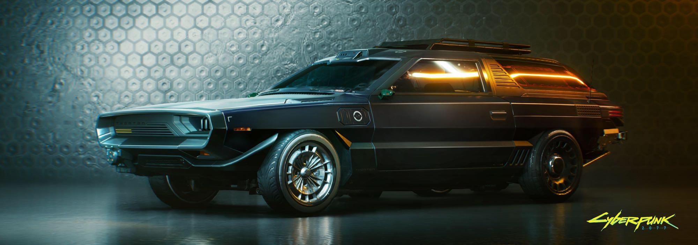
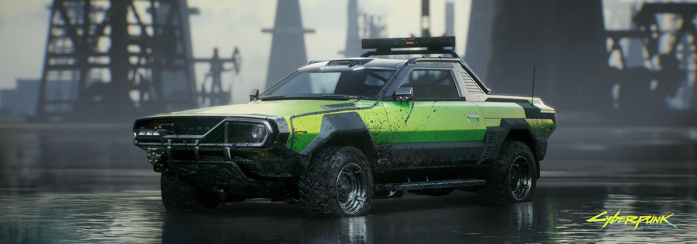

Based on your (presumably) reasonable budget and desire for utility, we sincerely recommend the following vehicles.


Thorton Colby
The representative of mid-range economical vehicles. Pickup trucks are suitable for carrying heavy loads, not only in the city, but also for long-distance traveling.